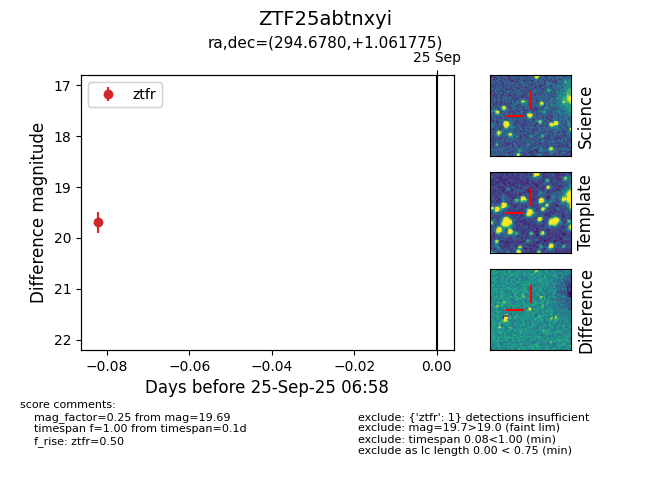

FINK: ZTF25abtnxyi
Lasair: ZTF25abtnxyi
ALeRCE: ZTF25abtnxyi
ZTF25abtnxyi (ztf,fink)
equatorial (ra, dec) = (294.6780,+1.06177)
galactic (l, b) = (39.3375,-10.00884)

last ztfr=19.69
1 ztfr detections